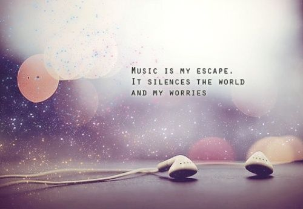

Hello! My name is Akhil. I'm 21 years old from India. I'm thankful to the CS50 Group for making these invaluable Lectures available in these strange times. Cheers to free education!
As I logged onto my computer and opened up the “add new” section of this website to create a new blog, I had no idea what I was going to write about. While brainstorming ideas, I realized something; I forgot to put music on. As soon as this thought entered my brain, I instantly knew what I was going to write about. Music is such an interesting thing, really. I’m not sure why humans are so intrigued by a combination of instruments and singing, but music is one of the most universal things on the planet. I don’t know where I would be without music. As cheesy as it sounds, music is always there for me. No matter what mood I am in, there is a song that goes with it. Whether you I am upset and looking to brighten up or trying to get myself pumped up for a big game, I am always able to find a song that does the job. Throughout this article, I want to figure out just why humans love music so much.

The idea of music makes no sense to me. When you think about it, all music is is people talking in an aesthetically pleasing way, yet I cannot go without it. Unlike things like food, sex, and water, music is not technically a necessity for life, but it has been a vital part of people’s lives for thousands and thousands of years. Valerie Salimpoor did a study in 2009 where she hooked up patients to an fMRI. While under the fMRI, the patients listened to one of their favorite songs. Salimpoor realized that, after listening to the emotional moments in the song, the patients actually released dopamine in their brain. For those of you who do not know, Dopamine is a neurotransmitter that controls the pleasure and reward center in the human brain. Dopamine is released whenever somebody “rewards the brain” or feels happy. For example, dopamine is released during sex, when you eat, engage in powerful drugs, etc. Figuring out that music causes a release of dopamine is very interesting, but makes perfectly good sense. When dopamine is released, the brain is often addicted to whatever caused the dopamine to release, which is why sex and drugs are so addicting to humans. Music has the same effect. Although most people would not admit it, the majority of people, myself included, are actually addicted to music.
What makes it so addictive, though? Why does it cause dopamine to be realized? The answer to this question will be different depending on who you ask. I’m sure all people can agree on these few things, though, that make music so great.
There are so many different genres and songs
There is truly a different song or type of music for every mood you can feel. Music has the ability to make you feel every kind of emotion. The reason people never get tired of listening to music is because you can listen for days without listening to the same song. There is so much music out there, and every person on planet Earth has a slightly different style of it.
Music can be so deep and meaningful
Have you ever listened to a song, and been absolutely speechless after because of how powerful the song was? I know I have. There are times I listen to a song and realize that the lyrics being sang portray a similar experience that I am going through, which makes me feel like I am not alone. People do not create music just to please people’s ears, they create it to convey a message. Music is how people express themselves. Everybody has a way of expressing themselves and sending a message, and musicians do it through their songs.
Music can be an escape from the real world
There are times when I am very stressed out and low on life, and only one thing can snap me out of it: music. When you are listening to music, it is as if you are escaping reality. For the time being, all of your stress and problems in life go away. Music is so important, and keeps me sane at times.
Conclusion: Music is far more than just a pleasant sound to the ear. It is loved by people all across the world of different cultures, languages, and lifestyles. The scientific reason why people love music so much is because it causes dopamine to be released from the brain. The humanistic reasons why people love music so much go on and on, but a few reasons are because it can be so diverse, so meaningful, and such a great escape from the real world.
Please note that I don't own any og the content above and I have taken it plainly for the purpose of this project, from a fellow music lover with whom I cannot agree more!. Here's his post